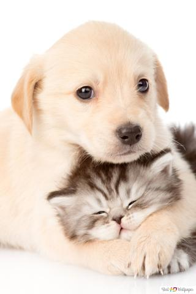

¿QUIÉNES SOMOS?
Fundación Huellitas es, desde 2008, una organización española especializada en la ayuda a perros y gatos abandonados y/o maltratados; una organización totalmente independiente que no recibe subvenciones de organismos oficiales, empresas ni partidos políticos. Practicamos el sacrificio cero, denunciamos judicionalmente a los maltratadores y buscamos adoptantes para todos los animales que acogemos.